Author Name: Wang Hanwei
Student ID: 1155221770
Course: Financial Analytics (MMAT5310)
# Load necessary libraries
library(dplyr)
library(ggplot2)
# Read the data
data <- read.csv("data_q1.csv")
# a. Create summary table
summary_table <- data %>%
group_by(Strategy) %>%
summarise(
`N(Buy)` = n(),
`Buy > 0` = sum(Return > 0),
`Buy (average)` = mean(Return)
)
# Save summary table
write.csv(summary_table, "q1_summary_table.csv", row.names = FALSE)
# b. Create box plot
boxplot <- ggplot(data, aes(x = Strategy, y = Return)) +
geom_boxplot() +
theme_minimal() +
labs(title = "Returns by Strategy",
x = "Strategy",
y = "Return")
# Save box plot
ggsave("q1_boxplot.png", boxplot)
# c. Conduct ANOVA test
anova_model <- aov(Return ~ Strategy, data = data)
anova_results <- summary(anova_model)
# Calculate µ (overall average) and α_i values
overall_mean <- mean(data$Return)
alpha_values <- coef(anova_model)
# Create results dataframe
anova_params <- data.frame(
Parameter = c("µ (overall mean)", "α₁ (Strategy A)"),
Value = c(overall_mean, alpha_values[2])
)| Strategy | N(Buy) | Buy > 0 | Buy (average) |
|---|---|---|---|
| A | 50 | 32 | 0.0000833 |
| B | 50 | 42 | 0.0002288 |
| Df | Sum Sq | Mean Sq | F value | Pr(>F) | |
|---|---|---|---|---|---|
| Strategy | 1 | 5.298e-07 | 5.298e-07 | 7.278 | 0.00822 |
| Residuals | 98 | 7.134e-06 | 7.279e-08 | NA | NA |
| Parameter | Value |
|---|---|
| µ (overall mean) | 0.000156 |
| α₁ (Strategy A) | 0.000146 |
# Load necessary libraries
library(dplyr)
library(ggplot2)
# Load data from data_q2.csv
data <- read.csv("data_q2.csv")
# Summarize mean and standard deviation of returns for each day
summary_table <- data %>%
summarise(across(everything(), list(mean = ~mean(.), sd = ~sd(.))))
# Print and save summary table
print(summary_table)
write.csv(summary_table, "q2_summary.csv", row.names = FALSE)
# Conduct ANOVA test
anova_result <- aov(cbind(Mon, Tue, Wed, Thu, Fri) ~ 1, data = data)
summary(anova_result)
# Save ANOVA results
write.csv(summary(anova_result)[[1]], "q2_anova_results.csv", row.names = FALSE)
# Predict Tuesday's return with 95% confidence interval
tuesday_pred <- predict(anova_result, newdata = data.frame(day = "Tue"), interval = "confidence")
| Day | Mean Return | Standard Deviation |
|---|---|---|
| Monday | 0.000105 | 0.0000801 |
| Tuesday | 0.000105 | 0.000220 |
| Wednesday | 0.000194 | 0.000102 |
| Thursday | 0.0000975 | 0.0000941 |
| Friday | 0.000205 | 0.000246 |
| Source | Df | Sum Sq | Mean Sq | F value | Pr(>F) |
|---|---|---|---|---|---|
| Residuals | 99 | 6.35e-07 | 6.42e-09 | NA | NA |
The ANOVA test results suggest that there is no significant day-of-the-week effect as indicated by the test statistics.
The predicted returns for each day of the week:
# Load required libraries
library(ExamPAData)
library(ggplot2)
library(dplyr)
library(pROC)
# Load auto_claim dataset
data(auto_claim)
# a. Create scatter plot of CLM_AMT5 vs INCOME
scatter_plot <- ggplot(auto_claim, aes(x = INCOME, y = CLM_AMT5)) +
geom_point(alpha = 0.5) +
theme_minimal() +
labs(title = "Claim Amount vs Income",
x = "Income",
y = "Claim Amount (5 years)") +
theme(plot.title = element_text(hjust = 0.5))
# Save scatter plot
ggsave("q3_scatter_plot.png", scatter_plot, width = 8, height = 6)
# b. Fit linear regression model
linear_model <- lm(CLM_AMT5 ~ MAX_EDUC + AGE + GENDER, data = auto_claim)
# Create prediction data for PhD, Age 30, Female
pred_data <- data.frame(
MAX_EDUC = factor("PhD", levels = levels(auto_claim$MAX_EDUC)),
AGE = 30,
GENDER = factor("f", levels = levels(auto_claim$GENDER))
)
# Get prediction with confidence interval
linear_pred <- predict(linear_model, newdata = pred_data, interval = "confidence", level = 0.95)
# Save linear model predictions
write.csv(data.frame(linear_pred), "q3_linear_model_ci.csv", row.names = FALSE)
# c. Fit logistic regression model
# Convert CLM_FREQ5 to binary (0 for no claims, 1 for at least one claim)
auto_claim$has_claim <- ifelse(auto_claim$CLM_FREQ5 > 0, 1, 0)
# Fit logistic model
logistic_model <- glm(has_claim ~ MAX_EDUC + AGE + GENDER,
data = auto_claim,
family = binomial)
# Get prediction for the same case
logistic_pred <- predict(logistic_model, newdata = pred_data, type = "response")
# Save logistic model prediction
write.csv(data.frame(probability = logistic_pred), "q3_logistic_pred.csv", row.names = FALSE)
# d. Generate ROC curve
roc_pred <- predict(logistic_model, type = "response")
roc_obj <- roc(auto_claim$has_claim, roc_pred)
# Create ROC plot
roc_plot <- ggroc(roc_obj) +
theme_minimal() +
geom_abline(intercept = 1, slope = 1, linetype = "dashed", color = "gray") +
labs(title = "ROC Curve for Claim Prediction Model",
x = "False Positive Rate",
y = "True Positive Rate") +
annotate("text", x = 0.75, y = 0.25,
label = paste("AUC =", round(auc(roc_obj), 3))) +
theme(plot.title = element_text(hjust = 0.5))
# Save ROC plot
ggsave("q3_roc_curve.png", roc_plot, width = 8, height = 6)
For a 30-year-old female with a PhD, the predicted claim amount is:
| Prediction | Lower CI | Upper CI |
|---|---|---|
| 4191.19 | 3495.59 | 4886.79 |
| Variable | Estimate | Std. Error | t value | Pr(>|t|) |
|---|---|---|---|---|
| Intercept | 5437.41 | 493.52 | 11.018 | < 2e-16 *** |
| MAX_EDUC (Bachelors) | -102.43 | 279.36 | -0.367 | 0.71389 |
| MAX_EDUC (High School) | 140.02 | 276.32 | 0.507 | 0.61234 |
| MAX_EDUC (Masters) | -151.49 | 299.86 | -0.505 | 0.61343 |
| MAX_EDUC (PhD) | -344.85 | 370.30 | -0.931 | 0.35174 |
| AGE | -30.05 | 10.35 | -2.902 | 0.00372 ** |
| GENDER (M) | -18.27 | 173.12 | -0.106 | 0.91594 |
Signif. codes: 0 '***' 0.001 '**' 0.01 '*' 0.05 '.' 0.1 ' ' 1
Model Statistics:
| Fit | Lower CI | Upper CI |
|---|---|---|
| 4191.19 | 3495.59 | 4886.79 |
| Variable | Estimate | Std. Error | z value | Pr(>|z|) |
|---|---|---|---|---|
| Intercept | 0.028527 | 0.115818 | 0.246 | 0.8054 |
| MAX_EDUC (Bachelors) | 0.003135 | 0.065477 | 0.048 | 0.9618 |
| MAX_EDUC (High School) | 0.062412 | 0.064604 | 0.966 | 0.3340 |
| MAX_EDUC (Masters) | -0.126340 | 0.070857 | -1.783 | 0.0746 . |
| MAX_EDUC (PhD) | -0.078742 | 0.087665 | -0.898 | 0.3691 |
| AGE | -0.010730 | 0.002440 | -4.397 | 1.1e-05 *** |
| GENDER (M) | 0.029294 | 0.040755 | 0.719 | 0.4723 |
Signif. codes: 0 '***' 0.001 '**' 0.01 '*' 0.05 '.' 0.1 ' ' 1
Model Statistics:
The ROC curve below shows the model's ability to discriminate between cases with and without claims:
The Area Under the Curve (AUC) indicates the model's discriminative ability, with values closer to 1 showing better discrimination between claim and no-claim cases.
# Load necessary libraries
library(dplyr)
library(tidyr)
library(broom)
# Load data
factors <- read.csv("factor.csv")
returns <- read.csv("ret.csv")
# Convert Date columns to proper format
factors$Date <- as.Date(factors$date, format = "%m/%d/%Y")
returns$Date <- as.Date(returns$date, format = "%m/%d/%Y")
# Part a: Regress excess return on factors for IBM
# Filter IBM returns and combine with factors
regression_data <- returns %>%
filter(PERMNO == 12490) %>% # Filter for IBM
mutate(IBM_excess = RET - factors$rf[match(Date, factors$Date)]) %>% # Calculate excess return
left_join(factors, by = "Date")
# Perform regression for IBM
ibm_model <- lm(IBM_excess ~ mktrf + smb + hml, data = regression_data)
# Get summary statistics
ibm_summary <- summary(ibm_model)
# Test hml coefficient
hml_test <- coef(summary(ibm_model))["hml", ]
# Part b: Analyze cma factor
# Calculate excess return for cma
factors$cma_excess <- factors$cma - factors$rf
# Regress cma excess return on factors
cma_model <- lm(cma_excess ~ mktrf + smb + hml, data = factors)
Testing whether the coefficient of HML on IBM is equal to zero at 5% significance level:
| Term | Estimate | Std. Error | t-statistic | p-value |
|---|---|---|---|---|
| (Intercept) | -0.000633 | 3.985e-05 | -15.891 | 7.877e-57 |
| mktrf | 0.001756 | 0.002832 | 0.620 | 0.535 |
| smb | -0.000104 | 0.005751 | -0.018 | 0.986 |
| hml | 0.000688 | 0.004410 | 0.156 | 0.876 |
With a p-value of 0.876 > 0.05, we fail to reject the null hypothesis. There is insufficient evidence to conclude that the HML coefficient for IBM is significantly different from zero.
Results from regressing CMA excess returns on market factors:
| Term | Estimate | Std. Error | t-statistic | p-value |
|---|---|---|---|---|
| (Intercept) | -1.770e-05 | 0.000114 | -0.156 | 0.876 |
| mktrf | -0.070736 | 0.007776 | -9.096 | 8.220e-19 |
| smb | -0.103878 | 0.017148 | -6.058 | 2.181e-09 |
| hml | 0.226837 | 0.012217 | 18.568 | 1.226e-63 |
The intercept (alpha) of -1.770e-05 with a p-value of 0.876 > 0.05 suggests that the CMA factor does not generate significant abnormal returns after controlling for market, size, and value factors.
# Load necessary libraries
library(dplyr)
# Read the data
data <- read.csv("return2.csv")
# Separate benchmark and portfolio data
benchmark <- data %>%
filter(Portfolio == "Benchmark") %>%
select(Sector, Weight, Return)
colnames(benchmark) <- c("Sector", "BWeight", "BReturn")
portfolio <- data %>%
filter(Portfolio == "CUHKFund") %>%
select(Sector, Weight, Return)
colnames(portfolio) <- c("Sector", "PWeight", "PReturn")
# Merge benchmark and portfolio data
attribution <- merge(benchmark, portfolio, by = "Sector")
# Calculate effects
attribution <- attribution %>%
mutate(
# Convert percentages to decimals
BWeight = BWeight/100,
PWeight = PWeight/100,
BReturn = BReturn/100,
PReturn = PReturn/100,
# Calculate effects
Allocation = (PWeight - BWeight) * (BReturn - mean(BReturn)),
Selection = BWeight * (PReturn - BReturn),
Interaction = (PWeight - BWeight) * (PReturn - BReturn)
)
# Calculate total effects
total_effects <- data.frame(
Effect = c("Allocation", "Selection", "Interaction", "Total"),
Value = c(
sum(attribution$Allocation),
sum(attribution$Selection),
sum(attribution$Interaction),
sum(attribution$Allocation) + sum(attribution$Selection) + sum(attribution$Interaction)
)
)| Sector | BWeight | BReturn | PWeight | PReturn | Allocation | Selection | Interaction |
|---|---|---|---|---|---|---|---|
| Commerce | 25 | 1.2 | 30 | 1.3 | -0.03125 | 0.025 | 0.005 |
| Finance | 25 | 4.0 | 50 | 3.5 | 0.54375 | -0.125 | -0.125 |
| Properties | 25 | 2.3 | 10 | 1.4 | -0.07125 | -0.225 | 0.135 |
| Utilities | 25 | -0.2 | 10 | 0.5 | 0.30375 | 0.175 | -0.105 |
| Effect | Value (%) |
|---|---|
| Allocation | 0.745 |
| Selection | -0.150 |
| Interaction | -0.090 |
| Total | 0.505 |
The BHB Return Attribution Analysis shows a total attribution effect of 0.51%. This can be broken down into three main components:
# Load necessary libraries
library(dplyr)
# Read the portfolio.rds file
portfolio_data <- readRDS("portfolio.rds")
# Calculate buy-and-hold return (B)
portfolio_data$B <- (portfolio_data$Close + portfolio_data$Div) /
(portfolio_data$Close - portfolio_data$CloseDifference) - 1
# Prepare data for ANOVA
strategy_returns <- data.frame(
Return = c(portfolio_data$B, portfolio_data$M, portfolio_data$W),
Strategy = factor(rep(c("B", "M", "W"), each = nrow(portfolio_data)))
)
# Conduct ANOVA test
anova_result <- aov(Return ~ Strategy, data = strategy_returns)
# Get summary statistics
summary_stats <- strategy_returns %>%
group_by(Strategy) %>%
summarise(
Mean = mean(Return, na.rm = TRUE),
SD = sd(Return, na.rm = TRUE),
N = n()
)
# Save results
write.csv(summary_stats, "q6_summary_stats.csv", row.names = FALSE)
write.csv(summary(anova_result)[[1]], "q6_anova_results.csv", row.names = FALSE)
| Strategy | Mean | SD | N |
|---|---|---|---|
| B | -0.000193 | 0.014554 | 624 |
| M | -0.000003 | 0.011000 | 624 |
| W | -0.000271 | 0.010763 | 624 |
| Source | Df | Sum Sq | Mean Sq | F value | Pr(>F) |
|---|---|---|---|---|---|
| Strategy | 2 | 2.378e-05 | 1.189e-05 | 0.0795 | 0.9236 |
| Residuals | 1869 | 0.2795 | 0.0001495 | NA | NA |
Based on the ANOVA test results (p-value = 0.9236 > 0.05), there is no statistically significant difference in returns among the three strategies (Buy-and-Hold, Monthly, and Weekly).
# Load necessary libraries
library(dplyr)
library(tidyr)
library(zoo)
library(lubridate)
# Load data, skipping first three lines
data <- read.csv("Nikkei225.csv", skip = 3)
# Select required columns and convert date
data <- data %>%
select(Date, Close, Open, High, Low) %>%
mutate(Date = parse_date_time(Date, orders = "dmY"))
# Calculate Heikin Ashi closing price
data <- data %>%
mutate(HClose = (Close + Open + High + Low) / 4)
# Calculate moving averages for both Close and HClose
data <- data %>%
arrange(Date) %>%
mutate(
MA5_Close = rollmean(Close, k = 5, fill = NA, align = "right"),
MA150_Close = rollmean(Close, k = 150, fill = NA, align = "right"),
MA5_HClose = rollmean(HClose, k = 5, fill = NA, align = "right"),
MA150_HClose = rollmean(HClose, k = 150, fill = NA, align = "right")
)
# Generate signals
data <- data %>%
mutate(
signal_Close = ifelse(MA5_Close > MA150_Close, 1, 0),
signal_HClose = ifelse(MA5_HClose > MA150_HClose, 1, 0)
)
# Calculate forward daily returns using log return
data <- data %>%
mutate(
forward_return = c(diff(log(Close)), NA)
)
# Calculate strategy returns
data <- data %>%
mutate(
return_Close = lag(signal_Close) * forward_return,
return_HClose = lag(signal_HClose) * forward_return
)
# Run ANOVA with blocking factors
anova_model <- aov(Return ~ Strategy + Year + Month, data = long_data)| Source | Df | Sum Sq | Mean Sq | F value | Pr(>F) |
|---|---|---|---|---|---|
| Strategy | 1 | 1.118e-06 | 1.118e-06 | 0.0111 | 0.9162 |
| Year | 5 | 0.001365 | 0.000273 | 2.7070 | 0.0191 |
| Month | 11 | 0.003498 | 0.000318 | 3.1530 | 0.0003 |
| Residuals | 2126 | 0.214420 | 0.000101 | NA | NA |
| Strategy | Mean | SD | N |
|---|---|---|---|
| return_Close | -0.000176 | 0.010143 | 1072 |
| return_HClose | -0.000130 | 0.010093 | 1072 |
| Strategy | Buy Signals |
|---|---|
| Close Strategy | 757 |
| HClose Strategy | 756 |
The ANOVA results show that while the strategy type does not have a significant effect on returns (p = 0.9162), both year (p = 0.0191) and month (p = 0.0003) factors have significant effects at the 5% level. The summary statistics reveal that both strategies generated slightly negative mean returns, with the Heikin-Ashi closing price strategy (HClose) showing a marginally better performance. Both strategies generated a similar number of buy signals over the period.
# Load necessary libraries
library(dplyr)
library(lubridate)
# Read the cash flow data
cash_flows <- read.csv("hsbc2.csv")
# Convert dates and calculate days from first cash flow
cash_flows$Date <- as.Date(cash_flows$Date)
cash_flows$Days <- as.numeric(cash_flows$Date - min(cash_flows$Date))
# Function to calculate NPV
calculate_npv <- function(rate, cash_flows) {
sum(cash_flows$CashFlow / (1 + rate)^cash_flows$Days)
}
# Function to find daily IRR using numerical method
find_daily_irr <- function(cash_flows, initial_guess = 0.0001) {
uniroot(
f = function(r) calculate_npv(r, cash_flows),
interval = c(-0.1, 0.1),
tol = 1e-10
)$root
}
# Calculate daily IRR
daily_irr <- find_daily_irr(cash_flows)
# Annualize the daily IRR (365-day compounding)
annual_irr <- (1 + daily_irr)^365 - 1| Measure | Value |
|---|---|
| Daily IRR | 7.821e-05 |
| Annual IRR | 0.02896 |